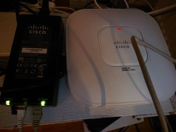

{kind=link}
Some initial needful information
- Reset is done by holding MODE and then powering off and on the device
- Default enable password is Cisco
- Serial ttyUSB0 worked with one usb to rs232 and then a serial to RJ45 adapter, my cheapo ebay USB to rj45 did not work. The colors of the wires are different..
- working: LL977744 CSA AWM and a "pl2303 converter" Prolific Technology Inc on ttyUSB0
- Firmware c1140-k9w7-tar.153-3.JD17.tar found on twitter with checksum d96702caf75442f01359aa9a6cb70d19
While the AP is in non autonomous mode you need to run a debug command to get the conf t: debug capwap console cli
To change it from using a controller to autonomous mode you need to load a firmware that is like that. The one I got had a firmware loaded that wanted to talk to a controller.
- While looking in serial log indeed the firmware on the AP was "w8" at the end == needs a WLC
- tried to first setup a TFTP server and open firewalls and reboot the access point while holding the mode button (you need to hold it for a long time, like 27s) - it tried to fetch the image from tftp://255.255.255.255/ but didn't work / timed out..
Hunt goes on:
These release notes got me a bit worried: https://www.cisco.com/c/en/us/td/docs/wireless/access_point/ios/release/notes/aap-rn-83mr5.html
Conversions from an 8.0 Wireless LAN Controller unified release AP image to autonomous 15.3(3) k9w7 image will get aborted with a message “AP image integrity check failed.” To overcome this, load any previous autonomous k9w7 image and then upgrade to the 15.3(3) JAB k9w7 images. If this is the same as LWAPP version I had was 7.3.x so the above did not apply.
https://greenwhitehat.blogspot.com/2017/08/how-to-configure-cisco-access-point-air.html
https://www.fragmentationneeded.net/2010/08/tftp-oddities.html is talking about changing listening address to 255.255.255.255 instead of 0.0.0.0 ..
secret sauze
- setup static IP on your linux computer, make sure to not just "ip addr add ip/24 dev eth0" because you might still have NetworkManager with DHCP that might revert those changes
- setup a dhcpd that has 10.0.0.5 10.0.0.7 range or some such
- setup a linux tftp.service - if you want "--verbose --address 255.255.255.255:69" to the tftp.service CentOS7 edit that file in systemctl cat tftp
- Not sure if needed but maybe it was useful
- systemctl start tftp dhcpd
- sysetmctl disable dhcpd tftp
- make sure to let UDP(& TCP?) 69 through the firewall
- next is to connect the console and login to the AP and run some commands:
$ ena
# conf t
# debug capwap console cli
# archive download-sw /force-reload /overwrite tftp://10.0.0.2/c1140-k9w7-tar.153-3.JD17.tar
- Before you disconnect the ethernet cable to the AP, do stop and disable dhcpd and tftp to prevent running some extra dhcp server in some office network.
Configuring it
Easiest is probably to use the http on http://IP:80 to configure it
Username/Password: Cisco/Cisco
There's the express setup and I used these settings:
- Only configured the 5GHz
- Set a short SSID and enabled broadcast beacon
- WPA2-PSK key
- Disabled universal admin
- Set VLAN 5 and native VLAN
Other changes:
- Enable the radio (no shutdown on the interface or in the web ui)
- Create a new user/change default passwords of Cisco user to make it a little bit harder for things to pwn it
- Set clock
- Change hostname and set a banner login banner
- copy run start
One could enable https, but that used a too weak key by default so I just left it at http. In any case make sure to set the clock before enabling https.
Some extremely useful links
Previous post in this blog about my home network: https://www.guldmyr.com/home-network-convergence/
http://wiki.r1soft.com/display/ServerBackup/Configure+a+TFTP+server+on+Linux
http://exchange2013pikasuoh.blogspot.com/2015/08/convert-cisco-air-lap1142n-k9-to.html